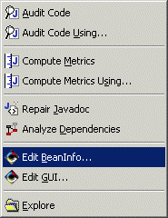

BeanInfo Bridge
This feature requires that VA Assist be installed into VisualAge Java. VA Assist is can be downloaded and installed from here.

Neither WebSphere Studio Application Developer 4.0 nor Eclipse 2.x includes a BeanInfo editor. The BeanInfo Bridge feature allows you to access the VA Java BeanInfo editor from within Application Developer/Eclipse by simply clicking on a class or compilation unit and selecting the "Edit BeanInfo" command. Technically, this involves quite a bit of cooperative magic between Application Developer/Eclipse and VA Java.
1) If VA Java isn't running, Eclipse will start it up in "slave mode"
- any version of VA Java will do, so you could install VA Java Entry for this purpose alone
- VA Assist needs to be installed in VA Java for all of the VA Java pieces to work. VA Assist should be configured to point to your Application Developer/Eclipse root directory
2) Once started, a bi-directional socket connection is established between VA Java and Application Developer/Eclipse
- if VAJ was already running, it will establish communications with that VA Java instance
3) Application Developer/Eclipse sends the code for the class to VA Java
4) The VA Java BeanInfo editor opens up on the code
- the matching *BeanInfo class is sent over to VAJ as well
5) You edit the class using the normal BeanInfo editor tools
- the tool is presented "standalone" and doesn't provide access to any other VA Java facilities/browsers
6) When you are done editing, the new code is generated and sent back over to Application Developer/Eclipse
7) When Application Developer/Eclipse shuts down, it will automatically shutdown VA Java as well
All of the CodePro / VA Assist integration features may be configured via the
"CodePro | VA Assist"
options page. On the VA Java side, the Application Developer/Eclipse integration features may be configured
via the "VA Assist | Application Developer/Eclipse" options page.